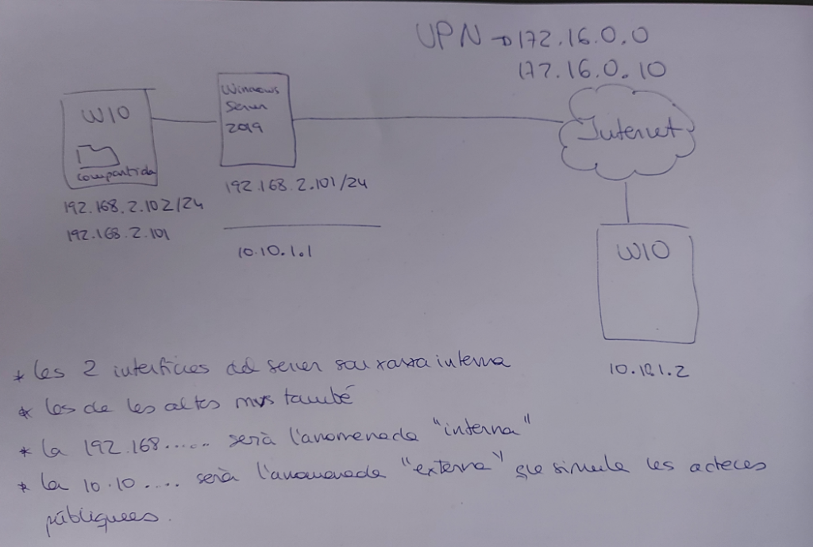

Configuració de VPN per Connexió a Active Directory
Introducció
Aquest document descriu el procés de configuració d'una VPN (Virtual Private Network) per permetre que un client Windows 10 remot es connecti a un Active Directory que es troba en una xarxa diferent.
Escenari
Tenim un Windows Server 2019 amb Active Directory a la xarxa interna i un client Windows 10 remot que necessita connectar-se a l'AD des d'una ubicació externa mitjançant una VPN:
- Xarxa Interna (192.168.2.0/24): On es troba el Windows Server 2019 amb Active Directory
- Client Remot (10.10.1.2): Client W10 que vol accedir a l'AD des d'una ubicació externa
- Xarxa VPN (172.16.0.0/16): Xarxa virtual que permet la connexió segura
Arquitectura de la Xarxa

Descripció de l'arquitectura:
Xarxa Interna (192.168.2.0/24)
┌────────────────────────────────────┐
│ │
│ ┌──────────────┐ │
│ │ Windows │ │
│ │ Server │───────────┼──── Internet (VPN: 172.16.0.0/16)
│ │ 2019 │ │
│ │ (AD + VPN) │ │
│ └──────────────┘ │
│ 192.168.2.101 │
│ 10.10.1.1 (externa) │
└────────────────────────────────────┘
│
│ Connexió VPN
│
┌────▼────┐
│ W10 │
│ Remot │
└─────────┘
10.10.1.2
Objectius
- Configurar el Windows Server 2019 com a servidor VPN
- Configurar les dues interfícies de xarxa del servidor:
- Interfície interna:
192.168.2.101/24(anomenada "interna") - Interfície externa:
10.10.1.1(anomenada "externa") - Configurar el client Windows 10 per connectar-se a la VPN
- Verificar la connexió i l'accés a l'Active Directory
Part 1: Configuració del Servidor VPN (Windows Server 2019)
1.1. Requisits Previs
Abans de començar, assegura't que:
- El Windows Server 2019 té dues interfícies de xarxa configurades
- El servidor té el rol d'Active Directory Domain Services instal·lat
- El servidor té connectivitat amb ambdues xarxes
1.2. Instal·lació del Rol de Accés Remot
- Obre el Server Manager
- Selecciona Add Roles and Features
- A Server Roles, selecciona Remote Access
- A Role Services, selecciona:
- DirectAccess and VPN (RAS)
- Routing
- Completa la instal·lació
1.3. Configuració de les Interfícies de Xarxa
És important configurar correctament les dues interfícies:
Interfície Interna (192.168.2.101/24): - Nom: "interna" - IP: 192.168.2.101 - Màscara: 255.255.255.0 - Gateway: (deixar buit)
Interfície Externa (10.10.1.1): - Nom: "externa" - IP: 10.10.1.1 - Aquesta interfície connecta amb la xarxa pública/externa
1.4. Configuració del Servei de Routing i Accés Remot
- Obre Routing and Remote Access des de les eines administratives
- Fes clic dret al servidor i selecciona Configure and Enable Routing and Remote Access
- Selecciona Custom Configuration
- Marca les opcions:
- VPN access
- NAT
- Inicia el servei quan se't demani
1.5. Configuració del Pool d'Adreces VPN
- A Routing and Remote Access, expandeix el servidor
- Fes clic dret a IPv4 → Properties
- A la pestanya General, marca Enable IPv4 Forwarding
- A Static address pool, afegeix el rang d'adreces VPN:
- Adreça inicial:
172.16.0.10 - Adreça final:
172.16.0.100 - Nombre d'adreces: segons necessitats
1.6. Configuració de NAT
- A Routing and Remote Access, expandeix IPv4 → NAT
- Fes clic dret a NAT → New Interface
- Selecciona la interfície externa
- Marca Public interface connected to the Internet
- Marca Enable NAT on this interface
Part 2: Configuració del Client VPN (Windows 10)
2.1. Crear una Nova Connexió VPN
- Obre Settings → Network & Internet → VPN
- Fes clic a Add a VPN connection
- Configura els paràmetres:
- VPN provider: Windows (built-in)
- Connection name: Nom descriptiu (ex: "VPN AD Empresa")
- Server name or address:
10.10.1.1(IP de la interfície externa del servidor) - VPN type: Automatic (o PPTP/L2TP segons configuració)
- Type of sign-in info: User name and password
2.2. Configurar Credencials
Utilitza les credencials d'un usuari del domini Active Directory:
- Usuari: DOMINI\usuari o usuari@domini.local
- Contrasenya: La contrasenya de l'usuari del domini
2.3. Connectar-se a la VPN
- A Settings → Network & Internet → VPN
- Selecciona la connexió VPN creada
- Fes clic a Connect
- Introdueix les credencials si se't demanen
Part 3: Verificació de la Connexió
3.1. Comprovar la Connexió VPN
Un cop connectat, verifica:
ipconfig /all
Hauries de veure una nova interfície de xarxa amb una IP del rang VPN (172.16.0.x).
3.2. Comprovar Connectivitat amb la Xarxa Interna
Prova de fer ping al servidor AD:
ping 192.168.2.101
3.3. Comprovar Accés a l'Active Directory
Prova de resoldre el nom del domini:
nslookup domini.local
3.4. Unir-se al Domini (Opcional)
Si el client no està unit al domini, pots unir-lo ara:
- System Properties → Computer Name → Change
- Selecciona Domain i introdueix el nom del domini
- Introdueix credencials d'administrador del domini
- Reinicia el sistema
Resolució de Problemes
El client no es pot connectar a la VPN
- Verifica que el servei Routing and Remote Access està en execució
- Comprova que el firewall permet el trànsit VPN (ports 1723 per PPTP, 1701 per L2TP)
- Verifica les credencials de l'usuari
El client es connecta però no pot accedir a la xarxa interna
- Verifica que el NAT està configurat correctament
- Comprova que el IP Forwarding està habilitat
- Verifica les rutes de xarxa amb
route print
No es pot resoldre noms del domini
- Verifica que el servidor DNS està configurat correctament
- Comprova que el client VPN està rebent la configuració DNS del servidor
- Verifica que el servidor AD està funcionant correctament
Consideracions de Seguretat
- Utilitza protocols segurs: Preferiblement L2TP/IPsec o IKEv2 en lloc de PPTP
- Contraseñes fortes: Assegura't que els usuaris tenen contrasenyes robustes
- Firewall: Configura el firewall per permetre només el trànsit necessari
- Auditoria: Activa el registre d'esdeveniments per monitoritzar les connexions VPN
- Actualitzacions: Mantén el servidor i els clients actualitzats
Conclusió
Amb aquesta configuració, hem aconseguit:
✅ Configurar un servidor VPN en Windows Server 2019
✅ Connectar un client remot a través de la VPN
✅ Permetre l'accés a l'Active Directory des d'una xarxa externa
✅ Establir una connexió segura entre dues xarxes diferents
Aquesta solució permet als usuaris remots accedir als recursos del domini com si estiguessin a la xarxa local, mantenint la seguretat i el control d'accés centralitzat de l'Active Directory.